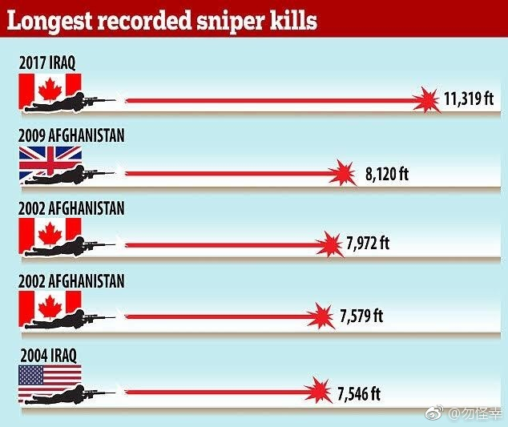

让子弹先飞一会 //@xzhao_:想学打枪//@_杨肉_: 可怕//@张宏杰:@勿怪幸:加拿大狙击手打破世界纪录，从2.14 miles(3.5公里）外击杀isis分子。子弹飞翔了10秒。用的枪是这把Tac-50。世界纪录前五名有3个是加拿大人。厉害。 
当年库里选秀的事情真是神奇。库里他爸一心想让他去拥有第8顺位选秀权的纽约尼克斯，但第2到第7顺位的球队都对他有兴趣。他爸靠拒绝试训拒绝了第二顺位的灰熊，第三顺位的雷霆最终选了哈登，第四顺位的国王试训后没有选库里。第五第六位都是森林狼，库里爸打电话给森林狼的新任总经理把他们吓回去了。第七位的勇士不吃拒绝试训这一套强行要选。库里经纪人去找第八位的尼克斯说你要是不交易来一个更高位的选秀权库里就被勇士选走了。尼克斯说不可能勇士已经有个好后卫了不会要库里的你放心吧。然后时任太阳队总经理的科尔希望用斯塔德迈尔换勇士的7号选秀权来选库里，被勇士拒绝。最后库里花落勇士。阴错阳差得到了最好的结局。 The story of how Stephen Curry's agent and dad didn't want the Warriors to draft him